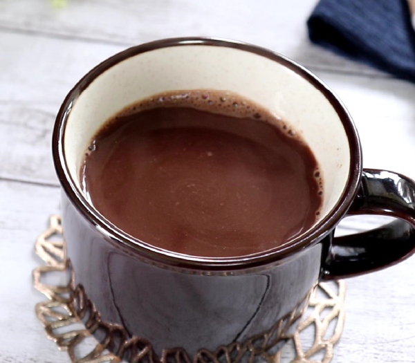

知れば知るほど、もっと美味しい
そのまま食べても美味しいショコラですが、お酒とのペアリングを楽しんだり、お茶と一緒に休憩のお供にしたり、はたまたホットミルクに溶かしてショコラ・ショにしたり。
当店では美味しいペアリングの提案とともに、ショコラに合うお酒やお茶も販売しております！
ショコラとお酒は相性抜群！
大人の楽しみ方
ショコラと赤ワインはよく合います。ショコラの甘味はワインの果実感やアルコール感と相性がよく、一緒に口に入れるととても心地よく感じられます。
カカオ率が高くなるにつれ、ブルゴーニュ産のような酸味の強いワインが合わなくなり、変わりに渋みやハーブのニュアンスのあるボルドー産がカカオ70～80％くらいのショコラと相性抜群です。
シャンパーニュとチョコの組み合わせも定番ですが、金額的にもちょっと敷居が高いかも……と感じてしまいます。カジュアルに楽しむなら、シャンパーニュと同じ製法で造られているカヴァがおすすめです。
ペアリングとしてもはや定番のイメージもあるウイスキーのほか、ビールや日本酒にもショコラと相性がいいものが隠れています。
オンラインショップの特集ページではお酒の種類ごとにおすすめの銘柄をピックアップしています。
貴方にあうペアリングをぜひ探してみてください。
ブレイクタイムならお茶と一緒に
コーヒーやウイスキーとの相性の良さは広く知られるところですが、実は紅茶や緑茶、烏龍茶といったお茶も、ショコラと驚くほど好相性なのをご存知でしょうか？
お茶とショコラのマリアージュの魅力は、なんといってもそのデリケートに重なる味覚のバランスを楽しめること。お茶はコーヒーやアルコールほど風味のパンチが強くないので、繊細なカカオの風味を消すことなく、単体で食べる以上にショコラの魅力を引き出してくれます。それでいて、お茶自身の存在感をしっかりと印象に残すことも忘れません。そう、お茶はまさにチョコレートの「名脇役」なのです。
まず押さえておきたいのが、どんなチョコレートにも合う万能のお茶。失敗のない組み合わせなら、プレゼントやおもてなしにも安心です。
その筆頭格が、イギリス伝統のフレーバードティー、アールグレイ。柑橘の一種、ベルガモットが爽やかに香り立つ紅茶です。アールグレイはショコラの素材としてもよく使われており、その相性の良さは折り紙つき。ショコラを食べながらアールグレイを少し口に含むと、気品漂うベルガモットの香りがふわりと鼻に抜けていきます。
他にも日本茶やプーアル茶など、オンラインショップで様々なお茶を販売しております。
タブレットショコラを溶かして作る
ショコラ・ショ

フランス語でホットチョコレートを意味するこのドリンクは、寒い時期に欠かせないこころ温まるオススメの一杯です。 当店のタブレットショコラを溶かして作るショコラ・ショのレシピをご紹介します！
ショコラ・ショ
材料（1人分）
- 牛乳
- 200ml
- タブレットショコラ
- 30g
- グラニュー糖
- お好みで
作り方
- 細かく刻んだタブレットショコラと少量の牛乳を耐熱カップに入れて電子レンジで１分加熱します。
- 加熱したものをよくかき混ぜ、残りの牛乳とお好みでグラニュー糖を入れます。
- 再び電子レンジで１分加熱したら完成です！
最後に加熱せずに氷をいれることで、アイスで召し上がることもできます。
マシュマロ、シナモン、ミントなどをトッピングすると、また違った味わいをお楽しみいただけます。 お好みでインスタントコーヒーやラム酒なども美味しいです。
タブレットショコラのフレーバーによっても味わいが変わりますので、自分好みのショコラ・ショを探してみてください。
オンラインショップで全ての商品を見る